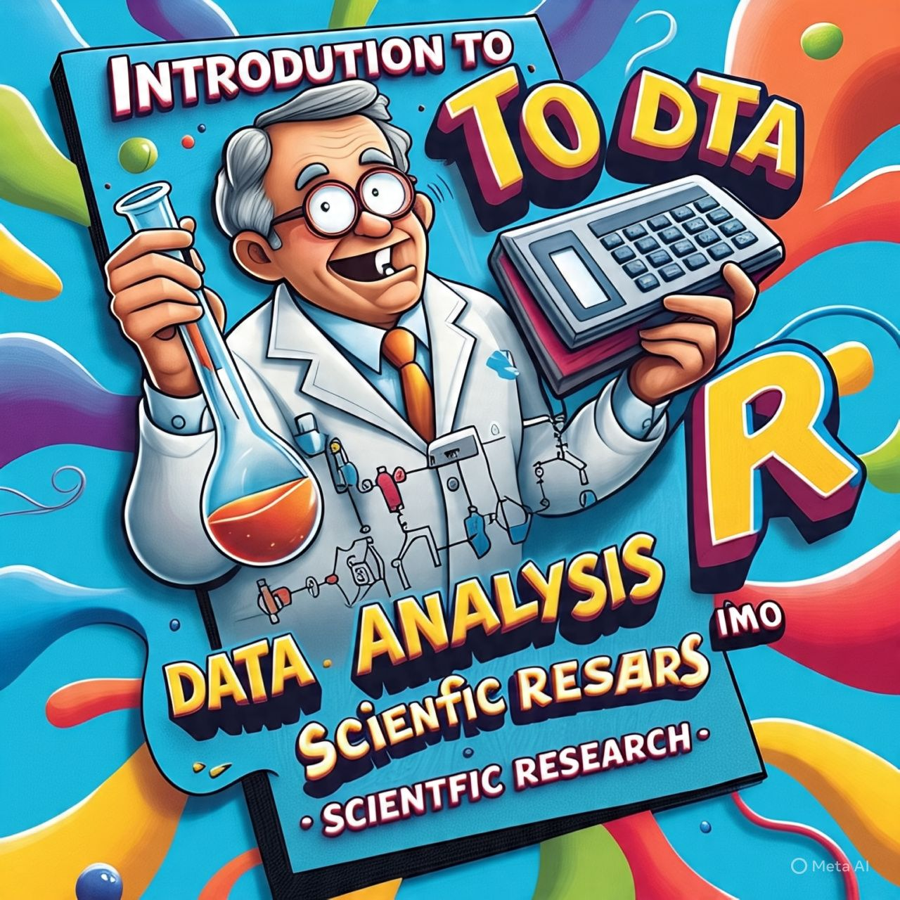

Introduction to R for data analysis in scientific research
Welcome

Here is an introductory sentence about this book. Many many introductory R resources lean heavily towards programming concepts and data science workflows, which might feel overwhelming for scientific researchers with smaller, cleaner datasets and no prior programming experience. I hope to provide a gentler introduction focusing on immediate needs with the idea that this can be much more effective in climbing the R learning curve - focusing on immediate usefulness and building complexity gradually
Target Audience: Scientific researchers with relatively clean datasets and little to no prior experience with R.
Book draft layout
Part 1: Getting Started and Your First Steps
Chapter 1: Welcome to the World of R and RStudio
- 1.1 Why R for Scientific Research?
- Flexibility, reproducibility, powerful statistical capabilities, excellent visualization, open-source and free.
- Briefly touch upon limitations (learning curve, can be memory-intensive with very large datasets).
- 1.2 Installing R and RStudio
- Step-by-step instructions for different operating systems (Windows, macOS, Linux).
- Highlight the distinction between R (the language) and RStudio (the IDE).
- 1.3 Navigating the RStudio Interface
- Console, Source Editor, Environment/History/Connections, Files/Plots/Packages/Help/Viewer.
- Introduce basic interactions: typing commands in the console, creating and running scripts.
- 1.4 Your First R Command: A Simple Calculation
- Demonstrate basic arithmetic operations directly in the console.
- Introduce the assignment operator
<-to store values in variables. - Example: Calculating a simple mean or standard deviation from a few manually entered numbers.
Chapter 2: A Gentle Introduction with a Real-World Example
- 2.1 The Scenario: A Small Experiment/Observation
- Create a very simple, relatable scientific scenario with a small dataset (e.g., measurements of plant height under two conditions, enzyme activity at different temperatures).
- Present the data in a clear, table-like format within the chapter.
- 2.2 Entering Data Directly in R
- Introduce basic data structures: vectors using
c(). - Creating a simple data frame using
data.frame(). - Emphasize the importance of clear variable names.
- Introduce basic data structures: vectors using
- 2.3 Performing a Basic Analysis
- Calculating descriptive statistics (mean, median, standard deviation) using built-in functions.
- Creating a simple plot (e.g., a bar chart or scatter plot) using base R graphics to visualize the data.
- Focus on interpreting the output in the context of the scientific scenario.
- 2.4 Saving Your Work: R Scripts
- Creating and saving R scripts (
.Rfiles) in RStudio. - The importance of commenting your code.
- Running scripts from the Source Editor.
- Creating and saving R scripts (
Part 2: Working with Your Scientific Data
Chapter 3: Importing Your Data into R
- 3.1 Understanding Common Scientific Data Formats
- CSV (
.csv), Tab-separated (.txt,.tsv), Excel (.xlsx).
- CSV (
- 3.2 Importing Data with
read.csv(),read.table(), andreadxl::read_excel()- Detailed explanation of key arguments:
header,sep,dec,stringsAsFactors(and why it’s oftenFALSEnow). - Working with file paths and the working directory.
- Troubleshooting common import errors.
- Detailed explanation of key arguments:
- 3.3 Exploring Your Imported Data
- Functions for inspecting data frames:
head(),tail(),str(),summary(),dim(),colnames(). - Accessing variables (columns) using
$notation.
- Functions for inspecting data frames:
Chapter 4: Data Wrangling for Clarity and Analysis
- 4.1 Introduction to Data Wrangling Principles
- The concept of “tidy data”.
- Why data wrangling is crucial for effective analysis.
- 4.2 Essential Data Manipulation with
dplyr- Introducing the
dplyrpackage and the pipe operator%>%. - Filtering rows based on conditions using
filter(). - Selecting specific columns using
select(). - Creating new columns or modifying existing ones using
mutate(). - Summarizing data using
summarise()andgroup_by(). - Illustrate with examples relevant to scientific data (e.g., filtering data for a specific treatment group, calculating group means).
- Introducing the
Chapter 5: Visualizing Your Findings with ggplot2
- 5.1 The Grammar of Graphics and
ggplot2- Introducing the fundamental components of a
ggplot2plot: data, aesthetics, geometry, statistics, facets, themes. - Emphasize the layered approach to building plots.
- Introducing the fundamental components of a
- 5.2 Creating Common Scientific Visualizations
- Scatter plots for relationships between continuous variables (
geom_point()). - Line plots for trends over time or continuous variables (
geom_line()). - Bar charts and column charts for comparing categorical data (
geom_bar(),geom_col()). - Box plots and violin plots for comparing distributions (
geom_boxplot(),geom_violin()). - Histograms and density plots for visualizing distributions of single variables (
geom_histogram(),geom_density()).
- Scatter plots for relationships between continuous variables (
- 5.3 Customizing Your Plots for Publication Quality
- Adding titles, labels, and legends.
- Modifying axes and scales.
- Choosing colors and themes.
- Saving plots to different file formats (
.png,.pdf,.tiff).
Part 3: Unveiling Insights with Basic Statistical Methods
Chapter 6: Common Statistical Tests in R
- 6.1 Introduction to Statistical Inference (brief overview)
- Hypothesis testing, p-values (explain conceptually, avoid deep theoretical dives).
- 6.2 Performing t-tests (
t.test())- Independent samples t-test (comparing two groups).
- Paired samples t-test (comparing measurements within the same subject/unit).
- Illustrate with relevant scientific examples.
- 6.3 Analysis of Variance (ANOVA) (
aov())- One-way ANOVA for comparing means of multiple groups.
- Briefly mention post-hoc tests (e.g., Tukey’s HSD using
TukeyHSD()). - Scientific examples with more than two groups.
- 6.4 Correlation and Simple Linear Regression (
cor(),lm())- Measuring the strength and direction of linear relationships.
- Building a simple linear model to predict one variable from another.
- Interpreting the output (correlation coefficient, R-squared, p-values for coefficients).
Chapter 7: Presenting Reproducible Research with R Markdown
- 7.1 What is Reproducible Research and Why is it Important?
- Transparency, collaboration, avoiding errors.
- 7.2 Introduction to R Markdown
- Combining code, narrative text, and output in a single document.
- Basic Markdown syntax (headings, lists, emphasis).
- Code chunks and their options (eval, include, echo, warning, message, fig.cap).
- 7.3 Creating Different Output Formats
- HTML, PDF, Word documents.
- Customizing the appearance of your R Markdown documents.
- 7.4 A Simple Workflow: From Data to Report with R Markdown
- Demonstrate creating a basic report that includes data loading, analysis, and visualization.
Part 4: Enhancing Your Workflow and Beyond
Chapter 8: Version Control with Git and GitHub (Introduction)
- 8.1 Why Version Control for Scientific Projects?
- Tracking changes, collaboration, reverting to previous versions, backups.
- 8.2 Basic Git Concepts
- Repositories, commits, branches.
- 8.3 Introduction to GitHub
- Creating repositories, pushing and pulling changes.
- Collaboration on GitHub (brief mention).
- 8.4 Integrating Git and GitHub with RStudio
- Using the Git pane in RStudio for basic operations.
Chapter 9: Next Steps in Your R Journey
- 9.1 Exploring R Packages for Specialized Tasks
- Briefly mention packages relevant to different scientific disciplines (e.g.,
lme4for mixed-effects models,survivalfor survival analysis,phyloseqfor microbiome analysis).
- Briefly mention packages relevant to different scientific disciplines (e.g.,
- 9.2 Finding Help and Resources
- R documentation (
?function_name). - Stack Overflow and R-related online communities.
- CRAN task views.
- Books and online courses.
- R documentation (
- 9.3 Best Practices for Writing R Code
- Clarity, consistency, commenting, organization.
Appendices (Optional):
- Appendix A: Common R Errors and How to Troubleshoot Them
- Appendix B: Installing and Managing R Packages
- Appendix C: Further Resources for Specific Scientific Domains
This outline provides a structured approach that starts with immediate, simple applications and gradually introduces more complex concepts. By focusing on practical examples relevant to scientific research and emphasizing the integration with RStudio, you can create a valuable resource for your target audience. Remember to keep the language clear, concise, and avoid unnecessary jargon. Good luck!